There are several reason why you would like to clone a question or an assignment. You may want to create a new question using another question as template. You may want to create a similar assignment for another class, or a practice assignment based on the assignment that you have just given, etc. We briefly explain below how to do it.
Suppose that you have selected a question (item 1 in the figure below) like in the figure of the Content Repository below.
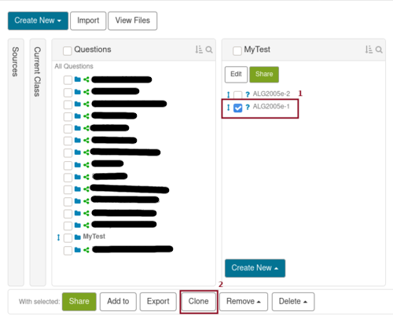
After having selected a question, a list of buttons appear a the bottom of the screen. One of them is the button Clone (item 2 in the figure above). If you click on this button, then you get the following popup window confirming the success of the operation.
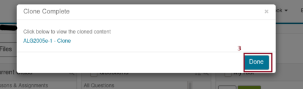
The text - clone is appended to the title of the questions that you you have cloned. You can click on the name of the cloned question to edit it, or you can click on Done (item 3 in the figure above) to return to the Content Repository.
Suppose that you click on Done (item 3 in the figure above). You will first notice that the question does not seem to appear any where. You have to refresh the display. One way to do it is to reload the Content Repository. After that you get the following display.
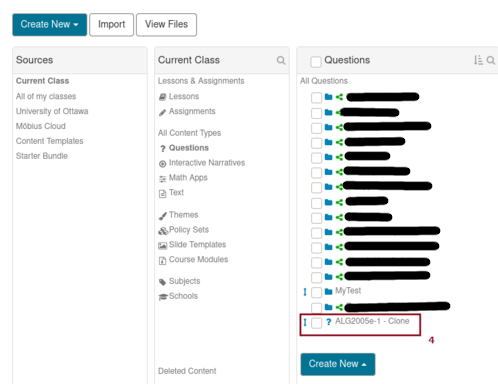
The cloned question (item 4 in the figure above) is located in the root directory of the Questions. You may used Add to to move it to the directory of your choice and then edit it.
You first have to access the folder in your Content Repository where the assignment that you want to clone is located. In our case, it is the sub-folder Devoirs (item 2 in the figure below) inside the folder Assignments (item 2 in the figure below).
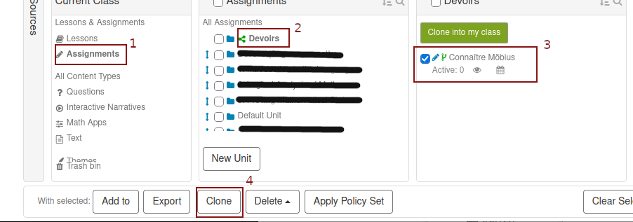
You select the assignment that you want to clone (item 3 in the figure above) and click on the button Clone at the bottom of the screen (item 4 in the figure above).
You then get the popup window displayed below that confirms that the assignment has been cloned.
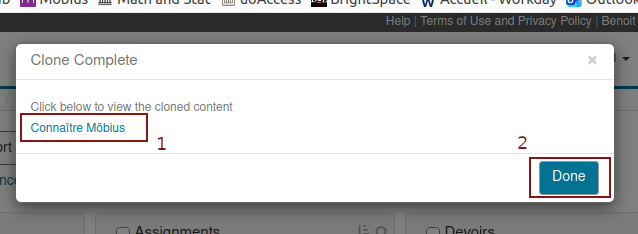
You can go directly to the cloned assignment by clicking on the title of the assignment which, in the present case, is Connaître Mobius (item 1 in the figure above). You can also click on the button Done (item 2 in the figure above) to close the popup window.
We assume that you have clicked on the button Done (item 2 in the figure above). You will find your cloned assignment (item 2 in the figure below) in the sub-folder Default Unit (item 1 in the figure below) of the folder Assignments.
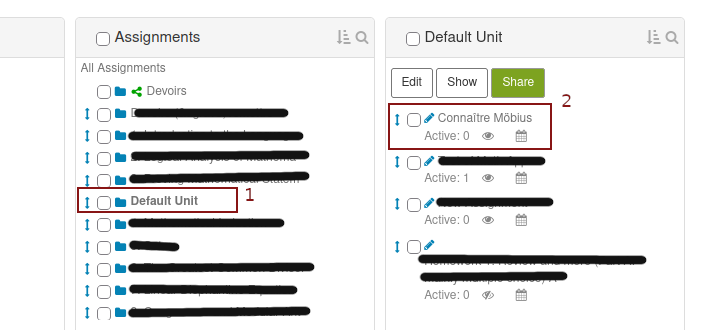
To edit the cloned assignment, you have to click on it (item 2 in the figure above) to get the window displayed below.
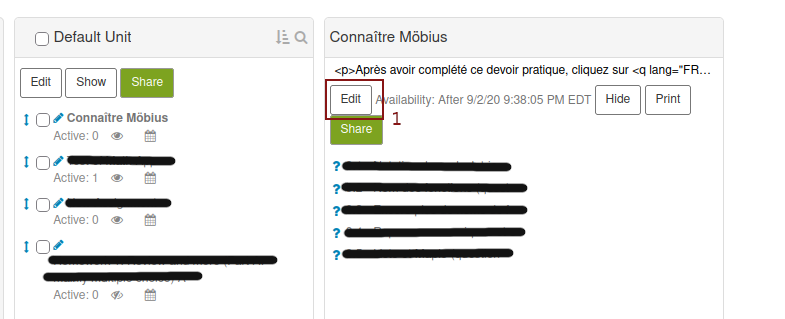
Then it suffices to click on the button Edit under the title of the cloned assignment (item 1 in the figure below) to get the familiar window that we have seen when creating an assignment in the section .
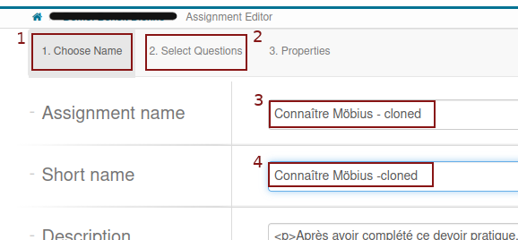
Under the tab Choose Name (item 1 in the figure above), you should change the name of the cloned assignment in the space beside the item Assignment name (item 3 in the figure above) and in the space beside the item Short name (item 3 in the figure above).
After having changed the name of the cloned assignment and possibly modified the list of questions in the assignment, it is time to edit the information under the tab Properties (item 1 in the figure below). After clicking on the title of this tab, you get a very long list of item to play with. The top part of this tab is displayed in the figure below.
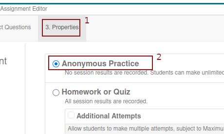
The reader should consult the section to get all the instructions on how to set policies for an assignment. Since the focus the section was on creating a Homework or Quiz, we will explain how to set an Anonymous Practice. This type of assignment is not recorded in any gradebook (Möbius or BrightSpace). You check the disk before the item Anonymous Practice (item 2 in the figure above).
Down in the long list of items under the tab Properties, you get the sections Feedback (During) (item 1 in the figure below) and Feedback (After) (item 2 in the figure below).
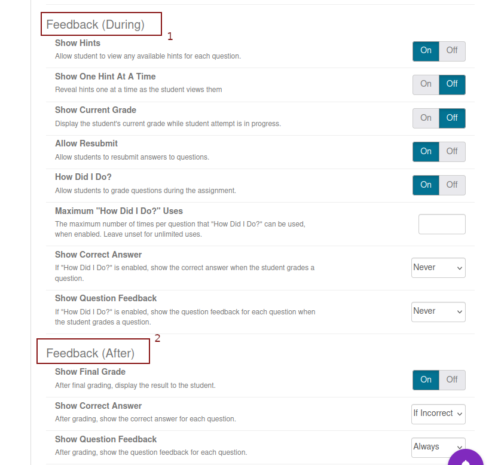
We are suggesting the options that are normally fine for a practice
assignment. You want students to see the hints if some are
available by clicking ON beside the item Show Hints and to
review and modify their answer to previous questions by clicking
on ON beside the item Allow Resubmit. You may also
want students to have access to How Did I Do? by clicking
ON beside the item How Did I Do?. It is possible to
limit the number of time that a student can use How Did I Do?.
For an Anonymous Practice assignment, it is probably fine to
give unlimited access to How Did I Do? by leaving the field
beside Maximum How Did I Do?
Uses blank.
After they submit the assignment, students should be able to see
their final grade. For that, you have to click on
ON beside the item Show Final Grade. Moreover,
students should have access to the correct answer and detailed solution
for each question. Therefore, you should select
If Incorrect or Always in the pull down menu beside
the item Show Correct Answer, and Always in the pull
down menu beside the item Show Question Feedback.
After they submit the assignment, students will then be able to
save to a pdf file the detailed solutions of the practice assignment
that they have written. However, they can not go back to the versions
of the practice assignment that they have previously written because
they are not recorded.
The next section of the tab Properties is the section Scheduling & Visibility displayed in the figure below..
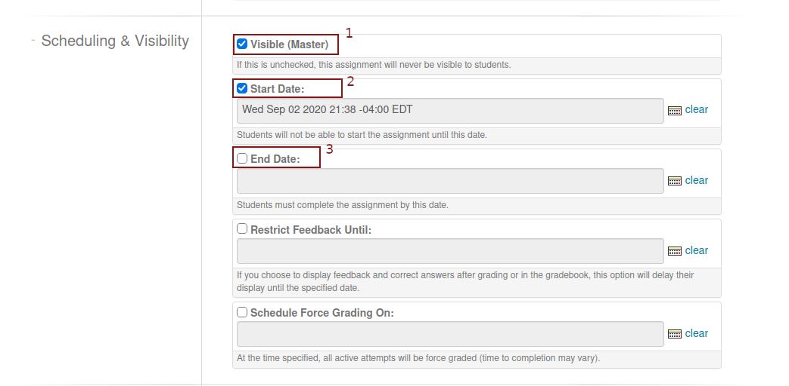
You must check the box before the item Visible (Master) otherwise students will never have access to the practice assignment even during the period of availability of the assignment. You may check the box before the item Start Date and select the starting date of the accessibility period in the field below this item. Likewise, you may check the box before the item End Date and select the end of the accessibility period in the field below this item. If you do not check these items, the practice assignment will be permanently available.
You must not forget to click on the button Save and Close (item 1 in the figure below) to save all the work that you have done.
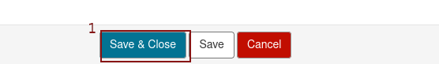
Finally, you get a popup window with a summary of the assignment that you have created similar to the one display in the figure below.
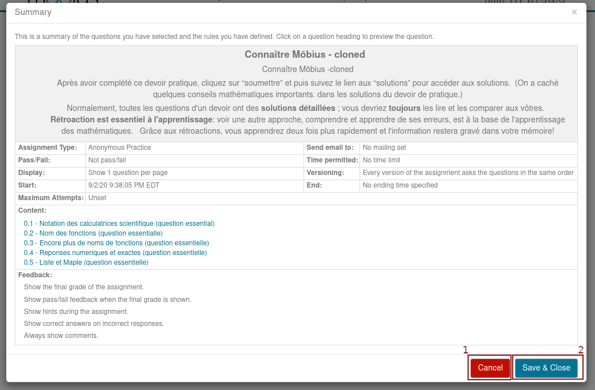
If there is no required modification, it suffices to click on the button Save and Close (item 2 in the figure above) to end the editing of the assignment. If you realized that some modifications are required, it suffices to click on the button Cancel (item 1 in the figure above) to go back to the window to edit the assignment.